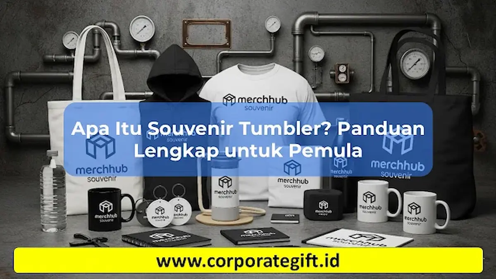

Corporate Gifts ID - Dalam beberapa tahun terakhir, tren pemilihan cinderamata dan hadiah perusahaan mengalami pergeseran signifikan dari barang pajangan dekoratif menuju produk fungsional yang bernilai guna tinggi. Salah satu komoditas merchandise yang paling konsisten menduduki peringkat teratas dalam permintaan pengadaan B2B adalah souvenir tumbler.
Souvenir tumbler kini menjadi andalan untuk berbagai momentum penting, mulai dari paket seminar kit, hadiah apresiasi karyawan (onboarding welcome kit), merchandise promosi eksibisi bisnis, hingga suvenir eksklusif pernikahan. Daya tahan material yang prima, fleksibilitas personalisasi grafir logo, serta fungsi praktisnya dalam mendukung gaya hidup sehat dan ramah lingkungan menjadikan tumbler jauh lebih diminati dibandingkan suvenir tradisional.
Poin Kunci Panduan Souvenir Tumbler:
- Fungsionalitas Tinggi: Tumbler digunakan harian di meja kerja, kendaraan, maupun saat berolahraga, menciptakan paparan merek (brand exposure) yang berulang secara alami.
- Material Awet & Aman: Dibuat dari material berstandar food grade seperti stainless steel SUS 304/316, kaca borosilikat, atau plastik BPA-free.
- Kustomisasi Desain Luas: Mendukung aneka teknik personalisasi logo mulai dari grafir laser permanen, UV print warna penuh, hingga sablon presisi.
- Dukungan Keberlanjutan (ESG): Berperan aktif mengurangi konsumsi botol plastik sekali pakai selaras dengan kampanye ramah lingkungan perusahaan.
Definisi dan Karakteristik Souvenir Tumbler
Secara harfiah, souvenir tumbler adalah wadah atau botol minum portabel berpenutup rapat yang dirancang untuk penggunaan berulang kali (reusable), yang diproduksi secara khusus sebagai media hadiah, cinderamata, maupun merchandise promosi resmi institusi.
Berbeda dari wadah air minum retail polos, souvenir tumbler memiliki sejumlah karakteristik esensial yang membedakannya:
- Material Berkualitas Tinggi: Umumnya dibuat dari bahan stainless steel ganda (double-wall vacuum insulated), kaca borosilikat tahan panas, atau polimer plastik food grade bebas BPA.
- Area Cetak Personalisasi: Memiliki permukaan bidang datar atau melingkar yang dirancang khusus untuk pengaplikasian logo korporat, slogan kampanye, nama penerima, maupun ilustrasi grafis acara.
- Kemampuan Pengondisian Suhu: Mampu menjaga kestabilan temperatur minuman dingin tetap segar atau minuman panas tetap hangat selama 6 hingga 12 jam.
- Nilai Presentasi Eksklusif: Kerap dilengkapi dengan kemasan kotak kardus kustom (hard box atau eco-cylinder box) yang memberikan kesan elegan saat diserahkan.

Beragam pilihan souvenir tumbler promosi mulai dari stainless steel vacuum flask hingga tumbler insert paper untuk berbagai kebutuhan branding acara.
Perbedaan Souvenir Tumbler vs Botol Minum Biasa
Meskipun sama-sama berfungsi sebagai wadah penampung air minum, tumbler memiliki diferensiasi yang sangat kontras dibandingkan botol plastik minum konvensional biasa dalam konteks pengadaan cinderamata korporat:
| Parameter Komparasi | Souvenir Tumbler Korporat | Botol Minum Plastik Biasa |
|---|---|---|
| Material Utama | Stainless Steel SUS 304, Kaca Borosilikat, atau Tritan Food Grade | Plastik PET / PP tipis standar sekali pakai atau jangka pendek |
| Isolasi Suhu | Dinding ganda berinsulasi hampa udara (tahan panas & dingin 8-12 jam) | Dinding tunggal tanpa insulasi (suhu cepat mengikuti suhu ruangan) |
| Opsi Branding | Grafir laser anti-luntur, UV Print full-color, Sablon, atau Insert Paper | Sangat terbatas, sering kali hanya berupa stiker tempel biasa |
| Masa Pakai | Tahan bertahun-tahun dengan ketahanan benturan yang baik | Cepat kusam, mudah tergores, dan rentan berbau setelah beberapa bulan |
| Persepsi Nilai | Tinggi, eksklusif, mencerminkan kepedulian dan profesionalisme brand | Rendah, terkesan murah, dan kurang berkesan bagi mitra VIP |
Kelebihan Souvenir Tumbler Dibanding Souvenir Lain
Mengapa banyak praktisi human resources, panitia seminar, dan divisi marketing memilih tumbler dibandingkan opsi souvenir lain seperti pulpen, gantungan kunci, atau kipas plastik? Berikut adalah faktor keunggulan utamanya:
- Tingkat Retensi Pemakaian Tinggi: Berdasarkan riset industri periklanan promosi, produk minuman seperti tumbler disimpan dan digunakan aktif oleh penerima selama lebih dari 12 hingga 18 bulan.
- Mendukung Gerakan Ramah Lingkungan: Pembagian tumbler secara langsung mengedukasi peserta untuk mengurangi penggunaan botol plastik sekali pakai, sejalan dengan visi corporate social responsibility (CSR).
- Media Promosi Berjalan (Mobile Advertising): Saat penerima membawa tumbler ke ruang rapat klien, coworking space, pusat kebugaran, maupun transportasi umum, logo perusahaan Anda akan dilihat oleh ratusan pasang mata setiap harinya.
- Kesesuaian untuk Segala Audiens: Tumbler bersifat universal, cocok diberikan kepada pria maupun wanita dari berbagai tingkatan jabatan, mulai dari staf magang, peserta seminar, hingga jajaran direksi komisaris.
Souvenir Tumbler Promosi vs Souvenir Biasa
Ketika menyusun alokasi anggaran belanja pengadaan cinderamata kantor, membandingkan dampak investasi (Return on Gifting) antara tumbler promosi dengan suvenir konvensional adalah langkah yang sangat bijak:
- Fungsionalitas Nyata: Tumbler memenuhi kebutuhan primer hidrasi tubuh setiap hari, sedangkan suvenir biasa seperti plakat pajangan atau gantungan kunci sering kali hanya tersimpan di dalam laci.
- Nilai Apresiasi Emosional: Karyawan atau mitra bisnis yang menerima tumbler premium merasa lebih dihargai secara personal, memperkuat loyalitas hubungan kerja sama jangka panjang.
- Daya Tahan Pesan Promosi: Tulisan logo yang diukir dengan teknologi grafir laser di permukaan stainless steel tidak akan pudar meskipun dicuci berulang kali selama bertahun-tahun.
Keamanan Souvenir Tumbler untuk Anak dan Keluarga
Jika acara perusahaan Anda melibatkan anggota keluarga karyawan (family gathering), perhatikan standar keamanan berikut saat memesan souvenir tumbler:
- Sertifikasi Bebas Bahan Berbahaya (BPA-Free): Pastikan material plastik atau segel karet silikon bebas dari senyawa Bisphenol-A yang berisiko bagi kesehatan hormonal.
- Tutup Anti-Tumpah & Anti-Bocor (Leakproof): Pilih model dengan mekanisme pengunci tutup yang kuat (safety lock) agar air panas atau dingin tidak bocor saat dimasukkan ke dalam tas ransel.
- Ergonomi dan Bobot Ringan: Untuk anak-anak dan lansia, pilih tumbler berkapasitas sedang (350ml s.d. 500ml) dengan bodi yang tidak licin serta pegangan silikon atau tali jinjing yang nyaman.
Pilihan Model Tumbler Populer untuk Kebutuhan Korporat
Di CorporateGifts.ID, kami menyediakan ragam model souvenir tumbler yang dapat disesuaikan dengan tema acara dan alokasi anggaran:
- Vacuum Tumbler LED Temperature: Dilengkapi layar sentuh digital pada tutupnya untuk memantau suhu minuman secara akurat, sangat cocok untuk tema seminar teknologi dan gift set VIP.
- Tumbler Stainless Steel Travel Mug: Desain modern dengan pegangan ergonomis dan lubang teguk praktis untuk karyawan yang memiliki mobilitas tinggi.
- Tumbler Bambu Ramah Lingkungan (Eco Bamboo): Memadukan interior stainless steel dengan lapisan eksterior kayu bambu alami berkesan organik dan mewah.
- Tumbler Insert Paper Ekonomis: Pilihan hemat biaya untuk event massal, di mana desain visual dapat dicetak full-color pada kertas khusus di antara lapisan akrilik ganda.
Pertanyaan Seputar Souvenir Tumbler (FAQ)

Ditulis oleh: Arinda Zakia
Senior Corporate Gifting SpecialistPraktisi kurasi hadiah korporat dan strategi merchandise promosi B2B dengan pengalaman lebih dari 7 tahun mendampingi ratusan perusahaan, BUMN, dan lembaga instansi di seluruh Indonesia.
Lihat Profil Lengkap & Panduan Lainnya